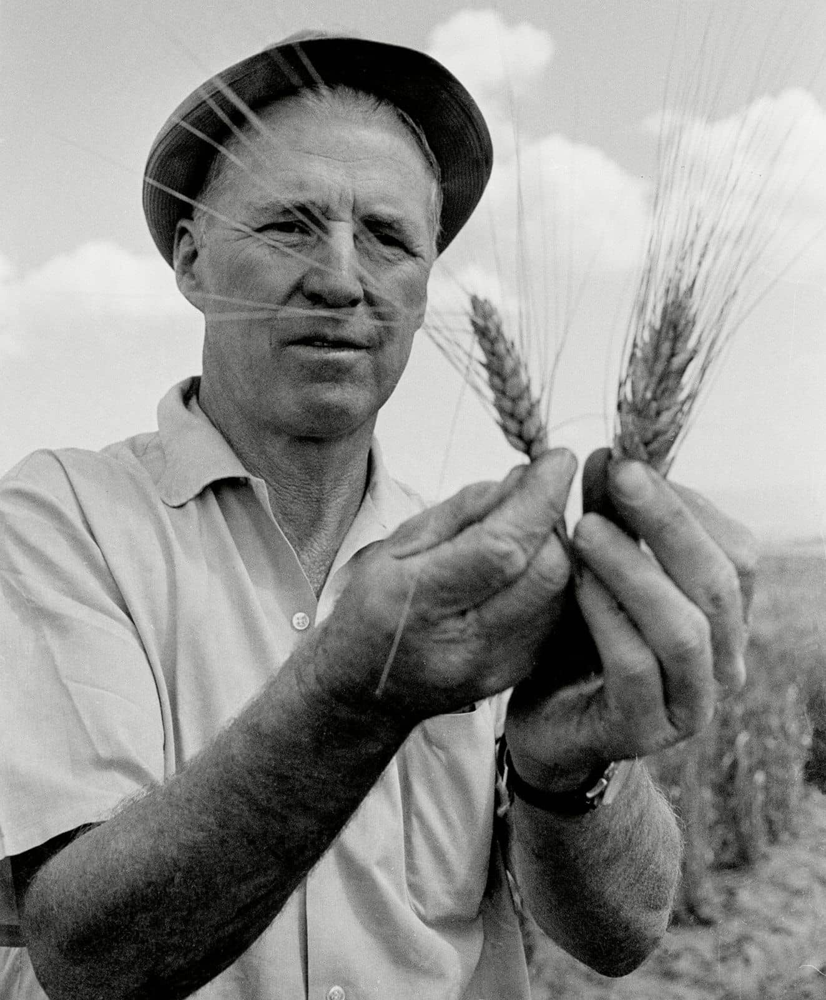

Dr. Norman Borlaug: The Father of the Green Revolution

Dr. Borlaug standing in a wheat field.
Dr. Norman Borlaug was an American agronomist and plant pathologist who is credited with saving millions of lives from starvation through his research and development of high-yielding varieties of wheat. He is often referred to as the "Father of the Green Revolution."